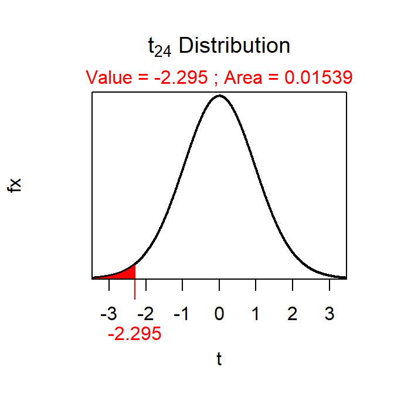
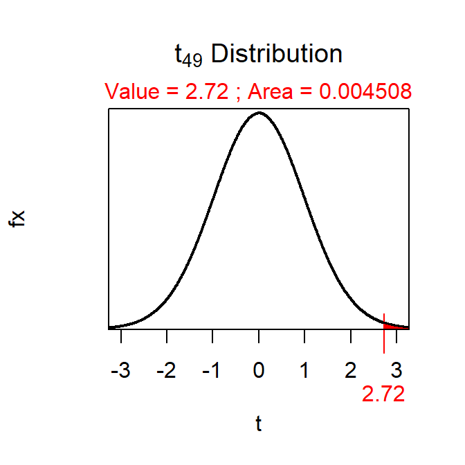
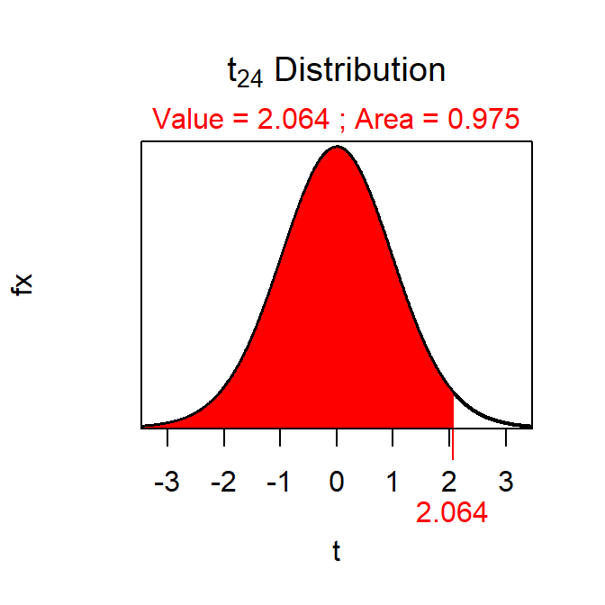
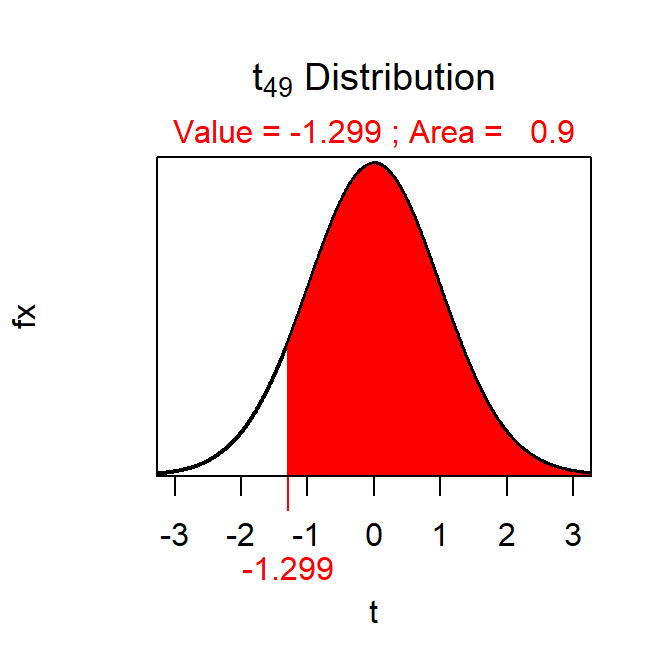
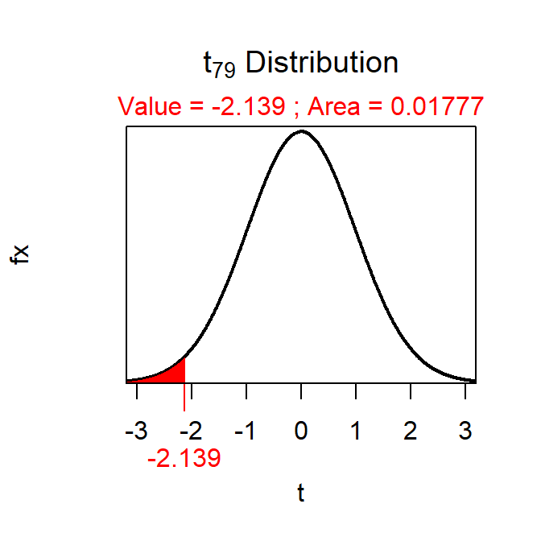
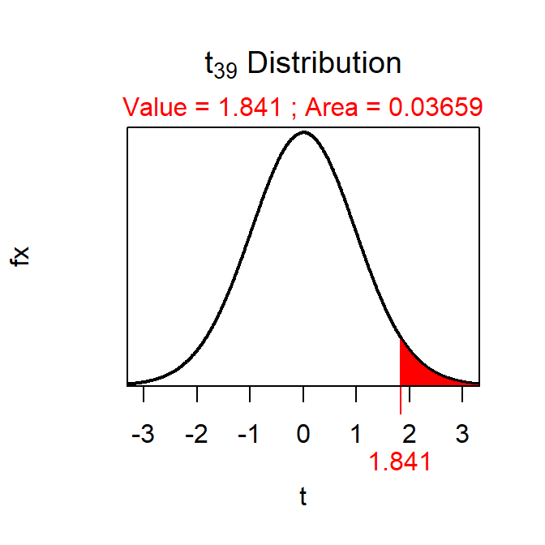
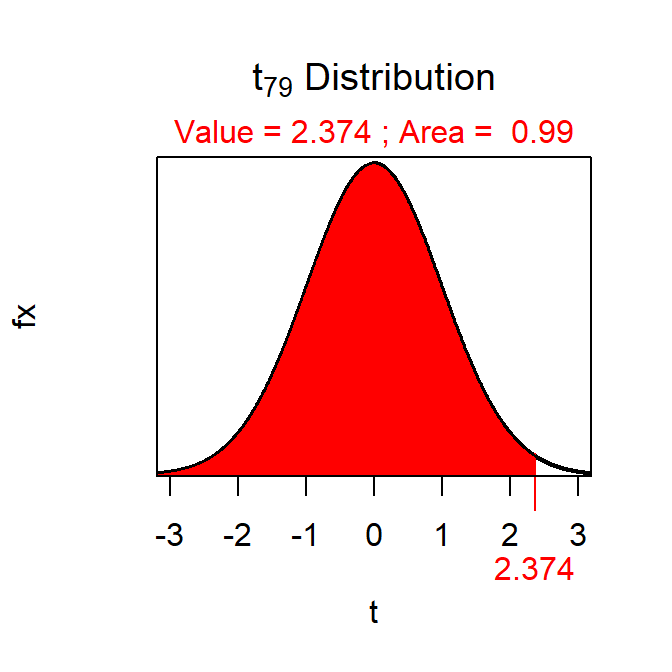
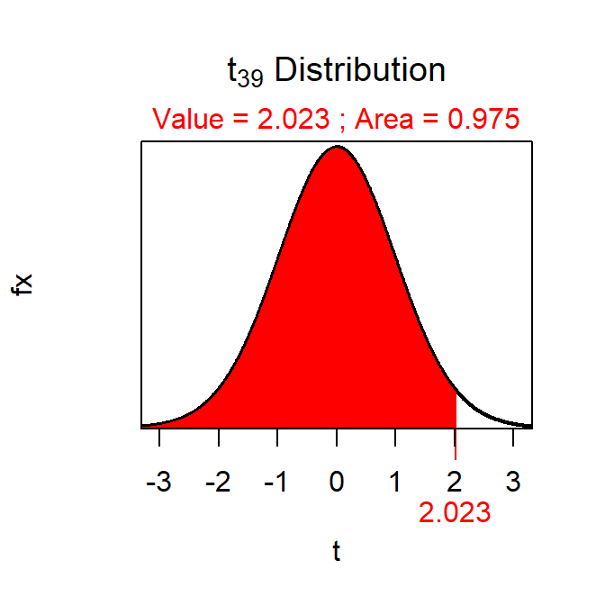

P-Value Calculations and Decisions I
-
Reject H0 because p-value=0.0308<α.

-
Reject H0 because p-value=0.0045<α.

Confidence Interval Calculations I
-
See below.
-
C=0.95
-
Interval
-
t*=±2.064.

-
(8.7,13.7).
-
I am 95% confident that the true population mean is between 8.7 and 13.7.
-
See below.
-
C=0.90
-
Lower bound
-
t*=-1.299.

-
77.4.
-
I am 90% confident that the true population mean is greater than 77.4.
Note:
-
Make sure to describe your evidence in Step 3 for why you are performing a 1-sample t-test. It is not adequate to simply say “because there is a quantitative response variable, only one group is being tested, and sigma is unknown.” At least say what the response variable is and what the one groups is.
-
Also make sure to describe your evidence in Step 5 for why the assumptions are met. It is not adequate to simply say “n≥40” or “n≥15 and the sample distribution is not strongly skewed.” You should state the actual n and direct the reader to how you know the distribution is not strongly skewed (i.e., likely a histogram).
-
In hand calculations, note that the test statistic (t in Step 7) is NOT the critical value (i.e., t) needed for the confidence region (in Step 11). The t you calculate in Step 7 has nothing to do with the t you will find in Step 11.
-
When computing the t in Step 7, the numerator is always x̄ minus the specific value in H0 from Step 2.
-
The p-value in this example is shaded to the left of the t from Step 7 and the result from
distrib() is multiplied by 2 because the HA is a not equals. If the t had been positive you would have shaded to the right and then muliplied by 2. When the HA is a not equals you always shaded into the tail nearest t and multiply the distrib() result by 2.
-
In Steps 10 and 11 don’t say μ. Rather replace it with μ means. See how those steps below say “mean CFU for ALL 100 ml of water” rather than just μ.
-
Also in Step 10 you can be more specific then saying that the mean CFL differs from 178. Because the x̄ is less than what was hypothesized you can say that the mean CFL differs from 178 by being less than 178. So, even though you strictly only tested for a difference in this not equal situation, you can be more specific with your statement in Step 10.
-
You values may differ slightly from mine as I calculate everything in R that holds many decimal places on intermediate values.
Acid Rain in Shenandoah National Park
-
α=0.01.
-
HA:μ<5.6 and H0:μ=5.6, where μ is the mean pH for all rainwater collections at the Big Meadows Station in the Shenandoah National Park, VA.
-
A one-sample t-test is required because quantitative variable (pH) was measured on individuals from one group or population (all rainwater collections at Big Meadows Station), σ is UNknown, and the population mean is being compared to a specific value in the hull hypothesis.
-
An observational study without obvious randomization was used.
-
The assumptions are met because σ is unknown and m=90≥40. Thus, the sampling distribution of the test statistic should follow a t-distribution.
-
The statistic is x̄=4.578 (Table 1).
Table 1: Results from the one-sample t-test for testing that the pH is less than 5.6.
t = -33.5303, df = 89, p-value < 2.2e-16
99 percent confidence interval:
-Inf 4.650103
sample estimates:
mean of x
4.577889
-
The test statistic is t=-33.530 with 89 df (Table 1).
-
The p-value is <0.00005 (Table 1).
-
The H0 is rejected because the p-value<α.
-
The mean pH appears to be significantly lower than 5.6 and, thus, indicates acid rain at this site.
-
One is 99% confident that the mean pH level is less than 4.65 (Table 1), which further indicates acid rain at this site.
R Appendix.
setwd('C:/aaaWork/Books/IntroStats/HW/')
ph <- read.csv("pHlevels.csv")
( ph.t <- t.test(ph$pH,mu=5.6,alt="less",conf.level=0.99) )
Increased Civility in Nation-States?
-
α=0.05.
-
HA: μ<4104 and H0: μ=4104, where μ is the mean number of citizens killed by ALL nation-states.
-
1-sample t-test because (i) one group or population (all nation-states) was sampled, (ii) a quantitative variable (number of killings) was recorded, and (iii) σ is not known.
-
An observational study with clear randomization of 75 countries.
-
The assumptions are met because (i) σ is not known and (ii) n=75≥40.
-
x̄=3292.8 killings.
-
t=\(\frac{3292.8-4104}{\frac{4814.5}{\sqrt{75}}}\)=-1.459 with 74 df.
-
p-value=0.0744.
-
Do not reject H0 because the p-value>α.
-
It appears that the mean number of killings for recent times is NOT significanlty lower than it was as determined from 19th century history books.
-
One is 95% confident that the number of killings in recent years for ALL nation-states is less than \(3292.8+1.666\frac{4814.5}{\sqrt{75}}\)=4219, which further indicates that the mean number of killings is not less than 4104.
R Appendix.
xbar <- 3292.8; s <- 4814.5; n <- 75
( se <- s/sqrt(n) )
( t <- (xbar-4104)/se )
( df <- n-1 )
( pv <- distrib(t,distrib="t",df=df) )
( tstar <- distrib(0.95,type="q",distrib="t",df=df) )
( ucb <- xbar+tstar*se )
Sea Level Rise Rate
-
α=0.01.
-
HA: μ>0 and H0:μ=0, where μ is the mean sea level rise rate for all ecosystems. [Note that a mean of 0 means no change.]
-
A one-sample t-test is required because a quantitative variable (sea level rise rate) was measured on individuals from one group or population (ecosystems), σ is UNknown, and the population mean is being compared to a specific value in the null hypothsis.
-
An observational study without obvious randomization was used.
-
The assumptions are met because σ is unknown, n=23≥15 and the background suggests that the distribution is not strongly skewed. Thus, the sampling distribution of the test statistic should follow a t-distribution.
-
The statistic is x̄=0.059.
-
t=\(\frac{0.059-0}{\frac{0.135}{\sqrt{23}}}\)=2.096 with 22 df.
-
p-value=0.0239.
-
The H0 is not rejected because the p-value>α.
-
The mean sea level rise rate does not appear to be greater than 0, indicating that the sea level has not increased significantly over the period of study.
-
One is 95% confident that the mean sea level rise rate is greater than \(0.059-2.508\frac{0.135}{\sqrt{23}}\)=-0.012, which further indicates that the mean rise rate is not greater than 0 and the sea level has not risen significantly over the study period.
R Appendix.
xbar <- 0.059; s <- 0.135; n <- 23
( se <- s/sqrt(n) )
( t <- (xbar-0)/se )
( df <- n-1 )
( pv <- distrib(t,distrib="t",df=df,lower.tail=FALSE) )
( tstar <- distrib(0.99,type="q",distrib="t",df=df,lower.tail=FALSE) )
( lcb <- xbar+tstar*se )
Thickness of the Ozone Layer
-
α=0.01
-
H0:μ=300, HA: μ≠300, where μ is the mean thickness of the ozone layer from ALL locations.
-
A one-sample t-test is required because (i) a quantitative variable (thickness) was measured, (ii)the individuals are from one group or population (the ozone layer over Arosa, SWI), and (iii) σ is not known. Thus, the population mean is being compared to a specific value in the null hypothesis.
-
An observational study of 45 random samples of ozone was conducted.
-
The assumptions are met because n=45≥40 and σ is UNknown.
-
x̄=345 (Table 2).
Table 2: Results from the one-sample t-test for testing that the mean thickness of the ozone layer is different than 300 Dobson units.
t = 13.9234, df = 44, p-value < 2.2e-16
99 percent confidence interval:
336.5675 354.0992
sample estimates:
mean of x
345.3333
-
The test statistic is Z=13.923 with 44 df (Table 2).
-
The p-value <0.00005 (Table 2).
-
The H0 is rejected because the p-value<α (Table 2).
-
The mean thickness of the ozone layer at ALL areas abova Arosa, SWI appears to be different (specifically greater) than 300 Dobson units.
-
I am 99% confident that the mean thickness of the ozone layer in ALL areas above Arosa, SWI is between 337 and 354 Dobson Units (Table 2).
R Appendix
ozo <- read.csv("https://github.com/droglenc/NCData/raw/master/OzoneSWI.csv")
( ozo.t <- t.test(ozo$Ozone,mu=300,conf.level=0.99) )
P-Value Calculations and Decisions II
-
Do Not Reject H0 because p-value=0.0178>α.

-
Do Not Reject H0 because p-value=0.0732>α.

Confidence Interval Calculations II
-
See below.
-
C=0.99
-
Upper bound
-
t*=2.374.

-
882.4.
-
I am 99% confident that the true population mean is less than 882.4.
-
See below.
-
C=0.95
-
Interval
-
t*=±2.023.

-
(1477.3,1982.7).
-
I am 95% confident that the true population mean is between 1477.3 and 1982.7.